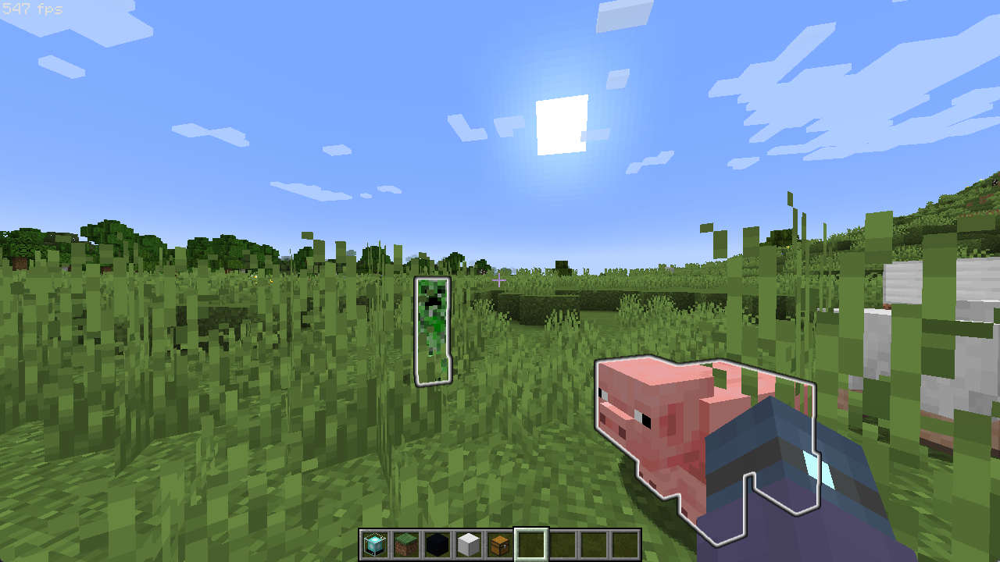
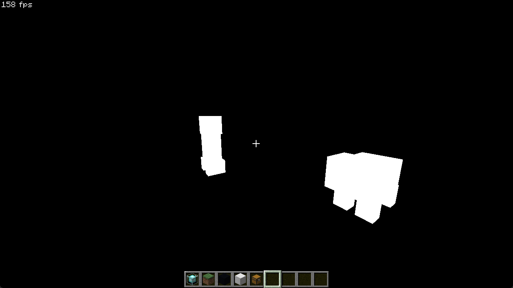
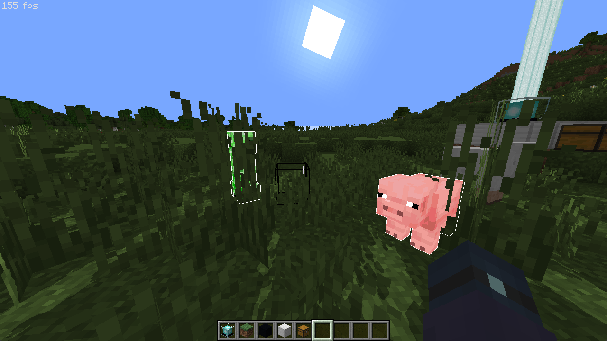
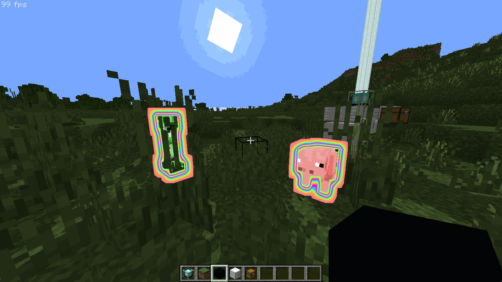

发光实体再处理
图像读写 还记得原版的发光实体吗？在生存模式中，当实体被光灵箭命中就会附加上发光效果。此时在其他玩家眼中，只要实体在渲染距离之内， 无论是否被其他物体遮挡 ，它们都会有一层厚厚的描边。
 在之前的片段着色器中，我们一直使用片段着色器常规的输出方式，在全局空间声明 out 变量，然后绘制到每个像素。不幸的是，在 OptiFine 的设置中，这些片段着色器都会主动进行深度测试，一旦被其他物体遮挡，几何体就不会被绘制，而且这个功能无法取消。幸运的是，GL 还有一种写入缓冲区的方案，而这个方案最初由英伟达作为扩展添加，并在 GLSL 4.20 转正为内置特性。
声明扩展 由于我们所声明的 GLSL 版本较低，因此需要使用 #extension 指令来调用扩展：
#extension GL_ARB_shader_image_load_store : enable
宏命令 #extension 我们都知道了，它紧接是扩展名。扩展名的命名规律为：
以现代规范要求的 GL 前缀开头；
扩展的 类型 ， ARB 表示获得了 OpenGL ARB 协会批准的正式扩展，类似的还有 EXT 表示泛用的扩展，但是可能部分硬件厂商未予以实现；
扩展的具体名称。
如果扩展名使用 all ，则会启用所有支持的扩展。
声明了扩展之后，我们还需要指定扩展的行为，在扩展名称后接 : 即可进行定义。扩展的行为可以为 require、 enable、 warn 和 disable ，它们的具体行为由下表决定：
行为
声明扩展
硬件不支持且使用扩展语法时
require
强制启用，不支持即报错
enable
通过编译
报错并中止（失败）
warn
通过编译
警告并继续（通过 1
disable
强制禁用，使用即报错
除了 require ，如果着色器的实际代码中没有使用任何扩展的内容或语法，则不会报错。
[1] 如果在不支持的硬件上使用了 warn 行为的扩展，就算通过了编译，最后的程序也会出现未定义行为。由于我们有插件进行报错，这个行为基本不会用到。
使用图像类型 和纹理类似，在着色器程序的全局空间使用 uniform 关键字即可声明图像类型 g imagetex 改为 img （shadowcolor 同样加上 img 后缀）。有一点不同的是，我们需要在之前使用 layout() 指定图像的格式。
上一节，我们将几何 ID 保存在了单通道8位无符号整数的 3 号缓冲区中，并且已经为发光实体保存了独特的 ID，但是这个 ID 实际只能用于为显露的发光实体处理额外特效。由于发光实体的描边特效仅描边外轮廓，而几何 ID 则覆盖了几何的内部，当发光实体被其他几何遮挡而强行写入时，延迟处理中的几何 ID 就会产生误判。
因此，我们将会启用 4 号缓冲区，用以保存发光实体需要绘制的轮廓依据。在原版中虽然在写入原始数据时只有 1 （发光区域） 和 0 （非发光区域），但是后续进行模糊扩散处理要求插值过渡和独立处理描边的不透明度，不过实际上也只需要一个数据，之后你就会知道。为此，我们将 4 号缓冲区设置为单通道 16 位浮点来避免过渡断层，并依照上文的方法调用：
[... Settings ...]
/*
const int colortex4Format = R16F;
*/
[... gbuffers_entities_glowing ...]
layout(r16f) uniform image2D colorimg4;
当然，你也可以将 3 号缓冲区的格式改为三通道，并将发光数据存入其中，但同时也需要处理先前的整型几何 ID，将它们转换为浮点值（习题 1）。
由于只能将 0 ~ 5 号缓冲区以图像格式读取，而几何缓冲又无法按常规方法读取 0 ~ 3 号缓冲区，可以在任何阶段以任何方式读写的颜色缓冲区实际上只有 4 号和 5 号，计算着色器还会更加放大这个问题。
因此在几何缓冲阶段，如果只是要使用之前的屏幕缓冲区数据，则推荐把这些数据存入 5 号之后的缓冲区；而延迟处理阶段中，也最好将 4、5 号缓冲区特意留出。
我们可以使用函数 imageLoad(gimage image, ivec coord) 来读取图像区域内任意坐标的内容，和 texelFetch() 类似，它使用索引坐标，唯一的区别是图像不可以指定细节等级，此外，也可以使用 imageSize() 函数来取到图像的尺寸，它直接返回整型值。
同样的，使用 imageStore(gimage image, ivec coord, gvec4 data) 来写入任意位置。无论几通道，第三项 data 均为四元数，由 GLSL 自动裁切。
在实际写入之前，还需要注意的是，它不会进行任何深度测试和 Alpha 测试（或者说自动深度测试已经是程序结束之后了），所以如果你想要描边完美贴合实体，应当在 Alpha 测试的 discard 之后才调用写入函数。
discard 指令在图像写入与片段着色器的普通输出之间有些许差别。如果触发了 discard 指令，像素着色器的普通输出会停止并丢弃当前像素的任何东西；而图像写入则只会在当前位置停下，而不影响先前写入的内容。
vec4 color = vec4(1.0);
bool cond = doSth();
imageStore(colorimg0, ivec2(gl_FragCoord.xy), color); // 正常写入
if(cond) discard;
color = vec4(0.0);
imageStore(colorimg0, ivec2(gl_FragCoord.xy), color); // if()为假，写入；if()为真，无效
vec4 color = vec4(1.0);
bool cond = doSth();
fragColor = color; // if()为假，写入；if()为真，无效
if(cond) discard;
color = vec4(0.0);
fragColor = color; // if()为假，写入；if()为真，无效
要想用普通输出达到图像写入的功能，可以使用反转条件：
fragColor = color; // 正常写入
if(!cond) {
color = vec4(0.0);
fragColor = color; // if()为真，写入；if()为假，无效
}
要想用图像写入达到普通输出功能，可以延后图像写入到条件判定之后（虽然在我们这个例子中看起来有点神经……）：
if(cond) discard;
imageStore(colorimg0, ivec2(gl_FragCoord.xy), color); // if()为假，写入；if()为真，无效
color = vec4(0.0);
imageStore(colorimg0, ivec2(gl_FragCoord.xy), color); // if()为假，写入；if()为真，无效
最后，我们的 gbuffers_entities_glowing.glsl 就长这样了：
[... 片段着色器部分 ...]
#extension GL_ARB_shader_image_load_store : enable
[...]
layout(r16f) uniform image2D colorimg4;
[... main ...]
[...]
if(fragColor.a <= alphaTestRef) discard; // 先进行 Alpha 测试！
imageStore(colorimg4, ivec2(gl_FragCoord.xy), vec4(1.0));
[...]
如果直接读取发光实体缓冲，看起来就像这样：
 除此之外，图像类型还可以进行原子操作，即当不同着色器程序向同一张图像的同一个位置写入相同数据时，会严格按照程序的执行顺序进行处理，不会出现次序问题。
可以用于原子操作的图像格式有严格的限制，只可以是 R32I/r32i 或 R32UI/r32ui ，但是通过格式转换是可以在其他格式上使用的，例如将一个 RGBA8I （4x8=32位）声明为 R32I （1x32=32位），不过这就需要手动进行移位来处理具体内容了。
所有原子操作返回的值都是图像位置上的原始值，下列的 g intgint 或 uint。 IMAGE_COORDS 表示正在处理的图像的像素坐标。
原子赋值，由于它们会返回原值，所以也可用作交换： gint imageAtomicExchange(gimage image, IMAGE_COORDS, gint data)
原子条件赋值，仅当图像目标值等于条件值时赋值： gint imageAtomicCompSwap(gimage image, IMAGE_COORDS, gint compare, gint data)
原子算术，GLSL 仅提供加法，但是你可以在有符号整数运算 中为 data 添加负号来进行减法运算： gint imageAtomicAdd(gimage image, IMAGE_COORDS, gint data)imageAtomicAdd(..., uint(-data)) 。当然，你得保证最终的值不会为负而溢出。
原子位运算，可以进行与、或和异或运算： gint imageAtomicAnd(gimage image, IMAGE_COORDS, gint data)gint imageAtomicOr(gimage image, IMAGE_COORDS, gint data)gint imageAtomicXor(gimage image, IMAGE_COORDS, gint data)
原子大小值，可以取最大值和最小值： gint imageAtomicMin(gimage image, IMAGE_COORDS, gint data)gint imageAtomicMax(gimage image, IMAGE_COORDS, gint data)
你也可以使用 memoryBarrier() 来手动设置内存屏障。
资料来源： Image Load Store - OpenGL Wiki ，此处仅作扩展阅读，留由读者自行研究。
描边与原版实现 现在我们已经获得了发光实体的遮罩数据，如果单纯地想给覆盖区域外围加上一圈描边，我们只需要在延迟处理中简单地检查当前像素是否为非发光区域，然后搜索邻近的四个（或加上对角线共八个）像素即可。当搜索到任何一个邻近像素是发光区域时，就给当前像素上色，类似这样：
[... Uniforms.glsl ...]
uniform isampler2D colortex4;
[... final - main ...]
bool isGlowing = bool(texture(colortex4, uv).r);
bool isGlowingEdge = false;
if(!isGlowing) {
for(int i = -1; i < 2; i+=2) {
ivec2 sCoord = ivec2(gl_FragCoord.xy) + ivec2(i,0);
isGlowingEdge = bool(texelFetch(colortex4, sCoord, 0).r);
if(isGlowingEdge) break;
}
for(int i = -1; i < 2 && !isGlowingEdge; i+=2) {
ivec2 sCoord = ivec2(gl_FragCoord.xy) + ivec2(0,i);
isGlowingEdge = bool(texelFetch(colortex4, sCoord, 0).r);
if(isGlowingEdge) break;
}
}
if(isGlowingEdge) fragColor = vec4(1.0);
至此，我们就已经初步成功给发光实体描上边了，值得注意的是，上一章中，我们将发光实体暂时设定为了无光照类：
 当然，这个发光描边效果仍然很粗糙，只有 1 像素，分辨率高一些观感就会变得很差，所以让我们继续拆解原版的发光描边着色器。
原版的描边使用了两个后处理 Pass 进行处理，第一个 Pass entity_outline_box_blur 使用方框模糊处理了发光区域的数据并让 Alpha 值在模糊边缘断层，从而形成渐变过渡，并间接确定了描边宽度：
#version 150
uniform sampler2D InSampler;
in vec2 texCoord;
in vec2 sampleStep;
out vec4 fragColor;
void main() {
vec4 blurred = vec4(0.0);
float radius = 2.0;
for (float a = -radius + 0.5; a <= radius; a += 2.0) {
blurred += texture(InSampler, texCoord + sampleStep * a);
}
blurred += texture(InSampler, texCoord + sampleStep * radius) / 2.0;
fragColor = vec4((blurred / (radius + 0.5)).rgb, blurred.a);
}
这个着色器利用 texture() 的插值性在纹理的四个像素交界处进行两次采样，然后再单独在采样方向上的最外侧进行一次采样，从而快速获得半径内的平均色，最后再除以采样半径 1
第二个 Pass entity_outline 2
#version 150
uniform sampler2D InSampler;
in vec2 texCoord;
in vec2 oneTexel;
out vec4 fragColor;
void main(){
vec4 center = texture(InSampler, texCoord);
vec4 left = texture(InSampler, texCoord - vec2(oneTexel.x, 0.0));
vec4 right = texture(InSampler, texCoord + vec2(oneTexel.x, 0.0));
vec4 up = texture(InSampler, texCoord - vec2(0.0, oneTexel.y));
vec4 down = texture(InSampler, texCoord + vec2(0.0, oneTexel.y));
float leftDiff = abs(center.a - left.a);
float rightDiff = abs(center.a - right.a);
float upDiff = abs(center.a - up.a);
float downDiff = abs(center.a - down.a);
float total = clamp(leftDiff + rightDiff + upDiff + downDiff, 0.0, 1.0);
vec3 outColor = center.rgb * center.a + left.rgb * left.a + right.rgb * right.a + up.rgb * up.a + down.rgb * down.a;
fragColor = vec4(outColor * 0.2, total);
}
由于第一个 Pass 进行了数据模糊，所以发光和非发光相接的区域就会产生 Alpha 值的平滑过渡。当我们使用与邻近像素的 Alpha 差值和作为绘制依据时，由于远离交界区域的 Alpha 值始终为 0 或 1，处理的像素和周围像素没有 Alpha 差值（始终为 0 或 1），交界区域就会自然产生描边条带。
虽然原版中使用了整个全通道的缓冲区用来处理输出，但如果我们只使用纯色，则只需要单个通道（习题 2）。我们用来处理发光轮廓的代码也将以它们为蓝本。
[1] 因为之前的采样都是两两像素的平均色，最后一次采样又手动减半，因此采样出来的颜色总和实际上只有一半，所以最后除数就不必为像素数量总和了。 [2] 原版允许使用 JSON 文件自定义使用的顶点着色器和片段着色器，因此会出现 Pass 名称和着色器名称对不上的情况。比如这个 Pass 的顶点着色器 blur.vsh 也被用于了打开菜单后的背景模糊。
多程序处理 之前的编程中，我们的延迟处理程序都集中在管线的最末端，即 final 中。而描边着色器要求将场景完全模糊之后再来检查，也就是说，如果我们想在同一个着色器中完成这些事情，需要将四周邻近的像素都进行模糊处理然后再来比较。然而普通的片段着色器中，这些数据是无法共享的，也就是说周围的像素在它们各自的片段着色器中也会这样干，最终就会造成四倍的模糊开销，这是极其不划算的。自然而然的，我们就会做出像原版那样的事情：先在一个 Pass 中进行图像模糊，再在下一个 Pass 中处理描边。
OptiFine 为我们提供了高度可自定义的延迟处理程序数量。回顾一下，我们可以用的延迟处理主要集中在两个阶段：固体几何缓冲之后的 Deferred 和余下几何缓冲之后的 Composite 。像发光描边这种类似 HUD 的特效，我们肯定是不希望被第二轮几何缓冲中的几何体给覆盖的，因此我们能选择的就只有 Composite 阶段了。
原版的模糊着色器很奇怪，它只在某个方向（sampleStep ）上处理了模糊（或许运行了两次？）。为了平衡性能和质量，我们会将模糊本身也分为两个 Pass，先将其进行水平模糊，再进行垂直模糊，这样处理的结果会更加柔和。因此我们的模糊就在 composite 和 composite1 中进行，而描边则接在 final 中场景绘制完毕之后。
没有特别的要求的话，所有延迟处理的顶点着色器都一样，因此你可以直接复制 final.vsh 并更名。
参考原版着色器，它使用了方框模糊（Box Blur）将周围的数据进行平均，我们也将仿照它的方法和技巧，进行 5x5 的模糊处理，并将半径设计为可调整。
其他的常规声明与 Final 一样，在这个着色器中，我们只需要向发光数据中写入内容，因此渲染目标只有 4 号缓冲区：
/* DRAWBUFFERS:4 */
layout(location = 0) out float blurredGlowingBuffer;
main 函数的内容和原版着色器很相似，只不过我们可以把模糊半径塞入 Settings.glsl 中，以便间接控制发光描边宽度。水平模糊的着色器看起来就像这样：
blurredGlowingBuffer = 0.0;
vec2 sampleDir = vec2(pixelSize.x, 0.0);
for(float i = -GLOWING_BLUR_RADIUS + .5; i <= GLOWING_BLUR_RADIUS; i += 2.0) {
blurredGlowingBuffer += texture(colortex4, uv + sampleDir * i).r;
}
blurredGlowingBuffer += texture(colortex4, uv + sampleDir * GLOWING_BLUR_RADIUS).r * .5;
而垂直模糊只需要将 sampleDir 的 vec2(pixelSize.x, 0.0) 替换为 vec2(0.0, pixelSize.y) 即可。
最后，我们回到 Final 中，将原版的方法封装成函数原样搬入，只需要注意将 .rgb 分量更改为 .r， .a 分量更改为 .g ，然后将其他统一变量对齐即可：
vec2 getGlowingEdge() {
float center = texture(colortex4, uv).r;
float left = texture(colortex4, uv - vec2(pixelSize.x, 0.0)).r;
float right = texture(colortex4, uv + vec2(pixelSize.x, 0.0)).r;
float up = texture(colortex4, uv - vec2(0.0, pixelSize.y)).r;
float down = texture(colortex4, uv + vec2(0.0, pixelSize.y)).r;
float leftDiff = abs(center - left);
float rightDiff = abs(center - right);
float upDiff = abs(center - up);
float downDiff = abs(center - down);
float total = clamp((leftDiff + rightDiff + upDiff + downDiff), 0.0, 1.0);
float outColor = center * center + left * left + right * right + up * up + down * down;
float div = GLOWING_BLUR_RADIUS + .5;
div *= div;
div *= div;
return vec2(outColor * .2 / div, total);
}
这里有个很奇怪事情，我们只执行了两次模糊，统一进行除法时却需要除以四次方才能和原版着色器的描边过渡相似 1
[1] 事实上就算在模糊着色器中进行除法，也需要给每个程序除以
vec2 glowingEdge = getGlowingEdge();
fragColor.rgb = mix(fragColor.rgb, glowingEdge.xxx, glowingEdge.y);
当然，你也可以自定义发光描边的颜色。最后让我们看看将模糊半径设置为 10，并将混合颜色使用三角函数和 frameTimeCounter
 习题 （与习题 2 二选一）将 4 号缓冲区的内容合并入 3 号缓冲区中。之后，你可以先使用 imageLoad(colorimg3, COORD).r 取出已经写入的几何 ID，然后手动进行深度测试来决定保留几何 ID 的源内容还是覆写新内容（当前片段深度小于深度图上已有的深度时，说明发光实体本身也在前景，因此要覆写几何 ID），最后使用 imageStore(colorimg3, COORD, vec4(float(geometryID), 1.0, vec2(0.0))) 覆写图像内容并确保 G 通道为 1.0 即可。随后的模糊 Pass 只需要将 R 通道中的内容原样输出。
（与习题 1 二选一）将 4 号缓冲区改为四通道，并在几何缓冲存入数据时写入纹理颜色，这样在后处理中就会产生根据实体本身的区别产生不同的描边光效。
尝试编写一个本节末尾处的彩虹描边效果。
如果你没有完成习题 2，可以直接定义一个三维向量，每个通道都利用三角函数将 glowingEdge.x 加上 frameTimeCounter 作为参数来周期性地改变颜色；然后配置文件中按统一变量的方法定义常量 Uniforms.glsl ，加入三角函数中用以给每个颜色分量不同的相位偏移（glowingEdge.x 或将其乘入混合参考。
如果你完成了习题 2，可以直接使用 glowingEdge.w 除以四次方的 GLOWING_BLUR_RADIUS + .5 来当作三角函数的参数，然后按上述方法来绘制彩虹。
30 June 2025